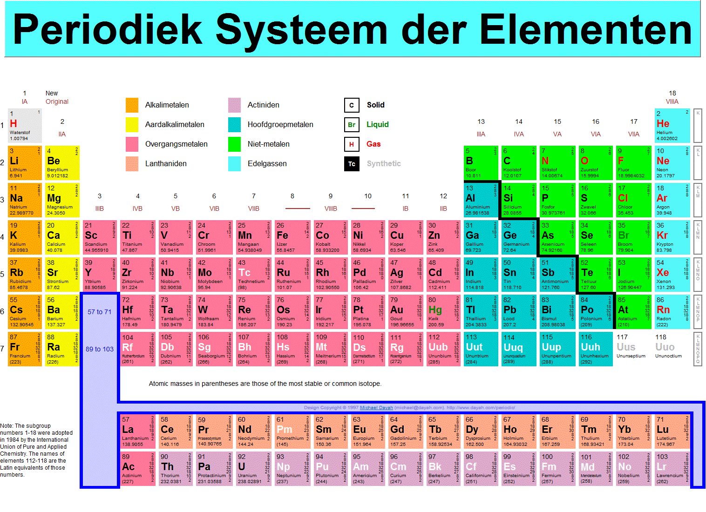

<div class="no_sidecard_main_content">
  <mat-card>
    <div>
      <h1>Periodiek Systeem</h1>
    </div>

    <article>
      <p>
        Alle atoomsoorten staan gerangschikt in een overzicht: het periodiek systeem.
        Dmitri Mendelejev heeft in 1869 een systeem bedacht waarbij de chemische en fysische eigenschappen van atoomsoorten met elkaar in verband bracht.
        In het periodiek systeem heb je rijen die horizontaal gaan die rijen heten perioden.
        De verticale kolommen in het periodiek systeem worden de groepen genoemd.
        De eigenschappen op macroniveau komen binnen een groep sterk overeen.
        Hieronder staan enkele groepen waarvan de eigenschappen erg overeenkomen:
      </p>
      
      <p>
        Groep 1 (Alkalimetalen): Alkalimetalen zijn erg reactief en vormen ionen met de lading 1+.
        Doordat alkalimetalen erg reactief zijn, zijn dit de meest onedele metalen die er zijn.
        De alkalimetalen reageren van boven naar beneden in het periodiek systeem steeds heftiger met water.
        Alkalimetalen zijn zachte metalen.
      </p>
      <p>
        Groep 2: (Aardalkalimetalen): Aardalkalimetalen zijn minder reactief al alkalimetalen, ze vormen een positieve ionen met een lading van 2+ en dit zijn harde metalen.
      </p>
      <p>
        Groep 17 (Halogenen): In de natuur komen halogenen voor als twee-atomige moleculen: F2, Cl2, Br2 en I2. Astaat (At) is radioactief en komt bijna niet voor in de natuur.
      </p>
      <p>
        Groep 18 (Edelgassen): Een eigenschap van edelgassen is dat ze niet of nauwelijks reageren met andere stoffen. Dit wordt veroorzaakt door de stabiele elektronen omringing.
      </p>

      <mat-card class="applet">
        <iframe src="https://h5p.org/h5p/embed/169074" width="1090" height="805" frameborder="0" allowfullscreen="allowfullscreen"></iframe><script src="https://h5p.org/sites/all/modules/h5p/library/js/h5p-resizer.js" charset="UTF-8"></script>
      </mat-card>
    </article>

  </mat-card>
</div>
